Statement review sample: Digital twin starter kit: site-drawing / supplied-extraction
A stratified random sample of 60 of 1085 statements (seed 1030). Strata: item (the items themselves: identity, attributes and other relations) 15/359, network (network layer: a drawn line network and what is attached to it) 15/221, network_pair (pairwise link: two items on the same drawn line network (the tracer's links)) 15/345, pipe (pipe layer: a pipe segment or junction (what is piped directly to what)) 15/160
Why this page exists. Everything this model says can be said as a plain
statement, and every statement points at where it came from: a box on a drawing sheet, a page of a report, a field of
a model. Checking a sample of statements against their sources turns “does this look right?” into a measured
error rate, and lets someone who knows the unit check it in plain language without reading JSON.
Two separate verdicts, never mixed.Matches its source: does the drawing box or report page say
this? Anyone can check that. True in the plant: is it actually so on the unit today? Only an operator, a
walkdown or live data can say, and only for a statement that matched its source (the second box stays locked until
the first says match). The “machine” line, where shown, only proves the export says what the model
says, not that the model is right.
MSCV-XXX in SYS-0 · 1 statement(s)
MSCV-XXX is attached to drawn line network S0-NET013.
PT 14085 and untagged valve S0-VL003 are on the same drawn line network (line network S0-NET007): lines, bends, junctions or crossings join them with no item between. This does not say a pipe runs directly from one to the other.
Source: no source of its own (the model's source document: OPEN100-0, revision public, page 1)
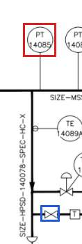
no source of its own: the line was traced, not read from a box. The crop shows both ends (red, blue) so you can follow it on the sheet
PT 14086 in SYS-0 · 2 statement(s)
PT 14086 and untagged valve S0-VL010 are on the same drawn line network (line network S0-NET007): lines, bends, junctions or crossings join them with no item between. This does not say a pipe runs directly from one to the other.
Source: no source of its own (the model's source document: OPEN100-0, revision public, page 1)
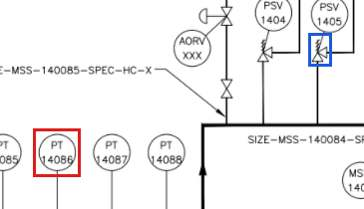
no source of its own: the line was traced, not read from a box. The crop shows both ends (red, blue) so you can follow it on the sheet
PT 14086 and untagged valve S0-VL013 are on the same drawn line network (line network S0-NET007): lines, bends, junctions or crossings join them with no item between. This does not say a pipe runs directly from one to the other.
Source: no source of its own (the model's source document: OPEN100-0, revision public, page 1)
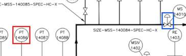
no source of its own: the line was traced, not read from a box. The crop shows both ends (red, blue) so you can follow it on the sheet
PT 14088 in SYS-0 · 2 statement(s)
PT 14088 and untagged valve S0-VL012 are on the same drawn line network (line network S0-NET007): lines, bends, junctions or crossings join them with no item between. This does not say a pipe runs directly from one to the other.
TE 14089A and untagged valve S0-VL015 are on the same drawn line network (line network S0-NET007): lines, bends, junctions or crossings join them with no item between. This does not say a pipe runs directly from one to the other.
Source: no source of its own (the model's source document: OPEN100-0, revision public, page 1)
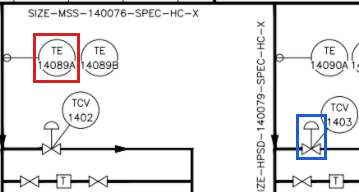
no source of its own: the line was traced, not read from a box. The crop shows both ends (red, blue) so you can follow it on the sheet
TE 14091A in SYS-0 · 1 statement(s)
TE 14091A and untagged valve S0-VL032 are on the same drawn line network (line network S0-NET022): lines, bends, junctions or crossings join them with no item between. This does not say a pipe runs directly from one to the other.
untagged general S0-GN004 in SYS-0 · 3 statement(s)
Untagged general S0-GN004 and untagged valve S0-VL010 are on the same drawn line network (line network S0-NET007): lines, bends, junctions or crossings join them with no item between. This does not say a pipe runs directly from one to the other.
Source: no source of its own (the model's source document: OPEN100-0, revision public, page 1)
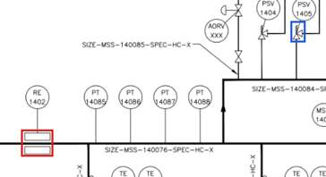
no source of its own: the line was traced, not read from a box. The crop shows both ends (red, blue) so you can follow it on the sheet
Untagged general S0-GN004 and untagged valve S0-VL013 are on the same drawn line network (line network S0-NET007): lines, bends, junctions or crossings join them with no item between. This does not say a pipe runs directly from one to the other.
Source: no source of its own (the model's source document: OPEN100-0, revision public, page 1)
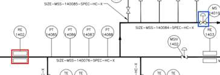
no source of its own: the line was traced, not read from a box. The crop shows both ends (red, blue) so you can follow it on the sheet
Untagged general S0-GN004 and untagged valve S0-VL015 are on the same drawn line network (line network S0-NET007): lines, bends, junctions or crossings join them with no item between. This does not say a pipe runs directly from one to the other.
Source: no source of its own (the model's source document: OPEN100-0, revision public, page 1)
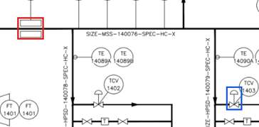
no source of its own: the line was traced, not read from a box. The crop shows both ends (red, blue) so you can follow it on the sheet
untagged general S0-GN006 in SYS-0 · 2 statement(s)
Untagged general S0-GN006 and untagged valve S0-VL010 are on the same drawn line network (line network S0-NET007): lines, bends, junctions or crossings join them with no item between. This does not say a pipe runs directly from one to the other.
Source: no source of its own (the model's source document: OPEN100-0, revision public, page 1)
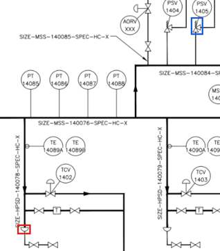
no source of its own: the line was traced, not read from a box. The crop shows both ends (red, blue) so you can follow it on the sheet
Untagged general S0-GN006 and untagged valve S0-VL013 are on the same drawn line network (line network S0-NET007): lines, bends, junctions or crossings join them with no item between. This does not say a pipe runs directly from one to the other.
Untagged valve S0-VL001 and N1 are on the same drawn line network (line network S0-NET002): lines, bends, junctions or crossings join them with no item between. This does not say a pipe runs directly from one to the other.
A pipe runs directly from untagged valve S0-VL005 to untagged valve S0-VL006, with no junction or other item between.
connection · layer: pipe · st-8c01259e5b22
Source: no source of its own (the model's source document: OPEN100-0, revision public, page 1)
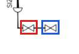
no source of its own: the line was traced, not read from a box. The crop shows both ends (red, blue) so you can follow it on the sheet
untagged valve S0-VL007 in SYS-0 · 1 statement(s)
Untagged valve S0-VL007 and TE 14090A are on the same drawn line network (line network S0-NET007): lines, bends, junctions or crossings join them with no item between. This does not say a pipe runs directly from one to the other.
A line is drawn directly from untagged valve S0-VL010 to PSV 1405, with no junction or other item between.
connection · layer: pipe · st-288bf3d30088
Source: no source of its own (the model's source document: OPEN100-0, revision public, page 1)
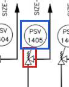
no source of its own: the line was traced, not read from a box. The crop shows both ends (red, blue) so you can follow it on the sheet
Untagged valve S0-VL010 and untagged valve S0-VL014 are on the same drawn line network (line network S0-NET007): lines, bends, junctions or crossings join them with no item between. This does not say a pipe runs directly from one to the other.
A pipe runs directly from untagged valve S0-VL032 to T (S0-GN017), with no junction or other item between.
connection · layer: pipe · st-513517349369
Source: no source of its own (the model's source document: OPEN100-0, revision public, page 1)
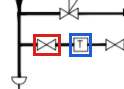
no source of its own: the line was traced, not read from a box. The crop shows both ends (red, blue) so you can follow it on the sheet
untagged valve S0-VL033 in SYS-0 · 2 statement(s)
Untagged valve S0-VL033 and off-page connector “HIGH PRESSURE STEAM DRAINS HPD PID 190-1” (S0-OP007) are on the same drawn line network (line network S0-NET039): lines, bends, junctions or crossings join them with no item between. This does not say a pipe runs directly from one to the other.